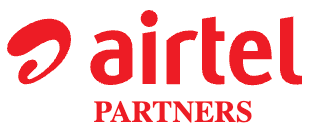

<!doctype html>
<html lang="en">
<head>
<meta charset="utf-8">
<meta name="viewport" content="width=device-width, initial-scale=1">
<title>Sign-in - Non-PO Portal</title>
<link rel="stylesheet" href="../assets/airtel.css">
</head>
<body>
<script src="../assets/kit.js"></script>
<script src="../assets/page.js"></script>
<script>
(function () {
  var S = Page.state();
  var top = '<div class="k-login-top"></div>';
  var html;
  if (S === 'roles') {
    html = '<div class="k-roles-top"><span class="sh-topsp"></span><span class="sh-topicon" data-go="pa-01">' + UI.icon('logout', 'lg') + '<span>Logout</span></span></div>' +
      '<div class="k-roles-body">' + UI.page({ title: 'Select Your Role  B0GPA204', sub: 'Your profile has more than one role on the Non-PO Portal. Choose the role to work in; you can switch roles later from Profile.' }) +
      UI.cards({ cols: 4, items: [
        { icon: 'edit', title: 'Business user', text: 'Raise provisions (maker)', go: 'pa-02?role=maker' },
        { icon: 'check', title: 'Manager', text: 'Approve provisions (checker)', go: 'pa-02?role=checker' },
        { icon: 'chart', title: 'GPA analyst', text: 'Posting, matching, ageing', go: 'pa-02?role=gpa', active: true },
        { icon: 'send', title: 'GPA manager', text: 'Post journals in Oracle', go: 'pa-02?role=gpam' },
        { icon: 'users', title: 'CFR', text: 'Force reversal, closure, new BU / GL', go: 'pa-02?role=cfr' },
        { icon: 'report', title: 'Business finance', text: 'Rule-based inputs, review', go: 'pa-02?role=bfin' },
        { icon: 'tower', title: 'AIO', text: 'Subscriber counts (VTM)', go: 'pa-02?role=aio' },
        { icon: 'eye', title: 'Audit', text: 'Reports and audit trail (read only)', go: 'pa-02?role=audit' }
      ] }) + '</div>';
  } else {
    var right = S === 'sso'
      ? '<h2>Airtel Sign-in</h2><p>Signing you in with your Airtel account</p>' + UI.stack([
          UI.alert({ tone: 'info', icon: 'shield', text: 'Redirecting to Airtel single sign-on (Azure AD). Complete multi-factor authentication on the Microsoft page.' }),
          UI.button({ label: 'Continue', variant: 'primary', wide: true, state: 'roles' })])
      : '<h2>Airtel Sign-in</h2><p>Provisioning &amp; Actualization is for Airtel employees</p>' + UI.stack([
          UI.msButton({ label: 'Sign in with Airtel account', state: 'sso' }),
          UI.p('You sign in once with your Airtel account (Azure AD with multi-factor authentication). Your roles, entity, BU and department access come from your profile.', { muted: true, small: true }),
          UI.or('Partners'),
          UI.p('Vendors and landlords use Partner Login on the Non-PO Invoicing pages to submit invoices. Provisioning is not available to partners.', { muted: true, small: true })]);
    html = top + '<div class="k-login"><div class="k-login-left"><div class="k-login-hero"><h1><em>Non-PO Provisioning</em>&amp; Actualization</h1><p>Raise provisions, post them to Oracle and settle them with invoices - one URN from start to close.</p></div></div>' +
      '<div class="k-login-right">' + right + '</div></div>';
  }
  html += UI.footer();
  Page.render({ id: 'pa-01', layout: 'plain', states: [{ id: 'sso', label: 'Single sign-on' }, { id: 'roles', label: 'Choose role' }], html: html });
})();
</script>
</body>
</html>
